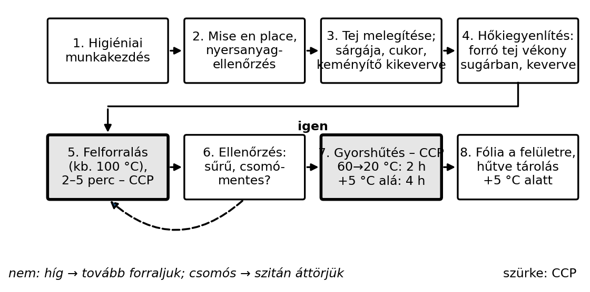

Egy cukrászda délelőtti műszakjában a tanuló azt a feladatot kapja, hogy készítse el a képviselőfánkok és krémesek töltéséhez használt alapkrémet. A séf rövid utasítást ad: „Főzz krémet, de ne legyen csomós, és azonnal tedd hűtőbe!” Ebéd után a vendég visszaküld egy képviselőfánkot, mert a krém „vizes, és mintha megsavanyodott volna”. A reklamáció mögött szinte mindig a főzött sárgakrém hőkezelése, hígítása vagy hűtése áll. Ez az alfejezet ezt a krémet tanítja meg: hogyan készítsünk sima, csomómentes, biztonságos főzött sárgakrémet, amely hűtve is stabil marad, és hogyan tartsuk be a kritikus szabályozási pontokat.
Képzeljünk el egy lábast: hideg tejben elkevert keményítő és tojássárgája. Ahogy a keveréket melegítjük, a folyadék először hígan, majd sűrűn folyik, végül pudingszerűen megáll a habverőn. A sűrűsödés nem varázslat: a keményítőszemcsék a melegben megduzzadnak, csirizesednek, a tojássárgája fehérjéi pedig koagulálnak. Ez a két folyamat együtt adja a krém testét. Ha a hőfokot nem érjük el, a krém híg marad; ha túlfőzzük, a keményítő elveszítheti víztartó képességét, és a krém később vizet engedhet.
Definíció. A főzött sárgakrém (cukrászkrém, crème pâtissière) olyan meleg úton sűrített krém, amelyet tejből, tojássárgájából, cukorból és keményítőből vagy lisztből készítünk. A krémet felforraljuk, hogy a keményítő csirizesedjen és a tojássárgája hőkezelt legyen.
Definíció. A vaníliakrém a főzött sárgakrém vaníliával ízesített változata. A magyar cukrászgyakorlatban a „vaníliakrém” gyakran azonos a főzött sárgakrém alapreceptjével, mert a vanília az alapízesítés.
Definíció. A diplomatakrém (crème diplomate) a kihűlt főzött sárgakrém és a felvert tejszínhab keveréke. A tejszínnel való könnyítés levegősebbé, lágyabbá teszi a krémet; a stabil változatba gyakran zselatint is kevernek.
Továbbvitt eredmény. A főzött sárgakrém és annak hűtési CCP-je a későbbi alfejezetekben tér vissza: a Tojáskrémek II: tojáshabkrémek és habcsókfélék, a Tejszínkrémek, bavarois, mousse és ganache-krémek, valamint a Vajkrémek: főzött, tojássárgás, habcsókos vajkrém alapja; a krémeseknél és a képviselőfánknál a Krémesek: vajas/leveles és forrázott tésztából alfejezet használja.
Higiénia. A krém tej- és tojástartalma miatt kiváló táptalaj a mikrobák számára. Minden eszköznek tisztának kell lennie, a tojást feltörés előtt ellenőrizni kell (repedés, szag), a krémet pedig a főzés után a lehető leggyorsabban le kell hűteni.
A következő lépéssor kb. 1 kg kész krémre (1150 g nyersanyag, a főzési veszteség után kb. 1 050 g) vonatkozik. A mennyiségek a technológiai lapon találhatók; itt a műveletek miértjét hangsúlyozzuk.
A kritikus fogásokat (hőkiegyenlítés vékony sugárban, felforralás, gyorshűtés sekély rétegben, fólia közvetlenül a felületen) és a hibás fóliázást a képsor mutatja; a vastag keretes képek a két CCP.
Higiénia. A krémet soha ne hagyjuk szobahőmérsékleten. A hűtőbe csak a lefedett, gyorsan lehűtött krém kerüljön. A hűtő hőmérsékletét naponta ellenőrizni kell, és a hűtő-hőmérsékletnaplóba bejegyezni.
A főzött sárgakrém két kritikus szabályozási pontja van a gyakorlatban: a hőkezelés és a gyors hűtés. A hűtve tárolás is CCP, de ezt általában a hűtő kezeléséhez kötik.
Kritikus pont. Hőkezelés: a krém maghőmérséklete forrásig (kb. 100 °C) emelkedik, majd lassú forralás közben legalább 2–5 percig forrásban marad (tanulási példa; ellenőrizendő: üzemi HACCP-terv). A hőkezelés a tojássárgáját biztonságossá teszi, és csökkenti a vegetatív kórokozók számát.
Kritikus pont. Gyors hűtés: a főzött krémet 60 °C-ról 20 °C-ra legfeljebb 2 óra alatt kell lehűteni, majd +5 °C alá 4 órán belül (tanulási példa). A gyors hűtés a spóraképző baktériumok szaporodását is lassítja.
Jogszabály. Az élelmiszer-higiéniai 852/2004/EK rendelet értelmében a hőkezelt élelmiszereket a veszélyes hőmérsékleti tartományon minél gyorsabban át kell vinni; a konkrét hőfok–idő értékeket a vállalkozás HACCP-terve rögzíti (ellenőrizendő: hatályos NÉBIH-útmutató).
Tilos. A főzött krémet melegen, lefedetlenül, szobahőmérsékleten hűlni hagyni. Tilos a friss krémhez hozzákeverni a korábban lehűlt, esetleg órák óta álló maradékot. Tilos a krémet a hűtőben nyitott edényben, más nyersanyagok fölé helyezve tárolni (keresztszennyeződés).
Tárolási elvek. A krémet +5 °C alatt, lefedve, a hűtőszekrény legfelső polcán, kész élelmiszerek közé téve tároljuk. A tárolási idő általában 24–48 óra (tanulási példa, ellenőrizendő). A felhasználás előtt a krémet újra keverjük át, hogy egyneművé váljon.
1. Számítás – Receptúra-nagyítás.
Adott: Az alaprecept 1150 g nyersanyagból áll (tej
800 g, tojássárgája 120 g, cukor 160 g, keményítő 60 g, vaníliás cukor
10 g), és 8% főzési veszteséggel kb.
kész krémet ad.
Keresett: Mennyi nyersanyag kell 2,5 kg kész
krémhez?
Képlet: a szorzószámot a kész krém tömegére számoljuk:
.
Minden összetevő tömegét
-val
szorozzuk.
Megoldás:
| Nyersanyag | Alap (g) | Szorzó | Új (g) |
|---|---|---|---|
| Tej | 800 | 2,36 | 1890 |
| Tojássárgája | 120 | 2,36 | 284 |
| Cukor | 160 | 2,36 | 378 |
| Keményítő | 60 | 2,36 | 142 |
| Vaníliás cukor | 10 | 2,36 | 24 |
| Összesen | 1150 | 2718 |
Ellenőrzés: Az új nyersanyag-összeg ; 8% veszteséggel kész krém. ∎
2. Számítás – Bruttó szükséglet veszteség mellett.
Adott: 3 kg kész főzött krémet szeretnénk kapni. A
főzési és tálazási veszteség (párolgás, edényre tapadás) együttesen
8%.
Keresett: Mennyi nyersanyagot kell kimérnünk?
Képlet:
,
ahol
.
Behelyettesítés:
Eredmény: Kb. 3,26 kg nyersanyagot kell kimérni ahhoz,
hogy 3 kg kész krémet kapjunk.
Ellenőrzés: Ha a veszteség 8%, akkor a nettó
.
∎
Cél. A tanuló készítsen el 1 kg főzött sárgakrémet (vaníliakrémet) a technológiai lap szerint, majd hűtse le és dokumentálja a CCP-ket.
Eszközök és anyagok. Lábas, habverő, szilikonlapát, digitális maghőmérő, hűtő, jégfürdős tál, mérleg, edények, fólia.
Higiéniai munkakezdés. Tiszta munkaruha, hajháló, rövid köröm, ékszer nélkül. Kézmosás szappanos vízzel. Munkafelület és eszközök fertőtlenítése. Nyersanyagok ellenőrzése (tej szavatossága, tojás épsége, keményítő szárazsága).
Biztonsági korlát. A forró krém égési sérülést okozhat. A tűzhelyet mindig felügyelet mellett használjuk. Habverőgépet vagy gépi keverőt csak oktatás után és felügyelettel kezelünk; otthon háztartási géppel, kis adagban gyakoroljunk. A gépet tisztítás előtt áramtalanítsuk és várjuk meg, amíg leáll.
Technológiai lap.
Termék neve: Főzött sárgakrém (vaníliakrém,
cukrászkrém).
Termékcsoport: Tojáskrém, főzött krém.
Alapmennyiség: 1150 g nyersanyag, főzés után kb. 1 050
g (8% veszteséggel kb. 1 058 g) kész krém.
Anyaghányad:
| Nyersanyag | Mennyiség (g) | Megjegyzés |
|---|---|---|
| Tej (3,5%) | 800 | hidegen mérve |
| Tojássárgája | 120 | pasztőrözött tojásléből vagy friss, ellenőrzött tojásból |
| Kristálycukor | 160 | |
| Vaníliás cukor | 10 | vagy 1 rúd vanília |
| Étkezési keményítő | 60 | pl. búza- vagy kukoricakeményítő |
| Összesen | 1150 | főzés után kb. 1 050 g krém (8% veszteség) |
Eszközök és gépek: Lábas, habverő, digitális maghőmérő, szilikonlapát, mérleg, jégfürdős tál, hűtő, fólia, szita.
Műveleti sorrend:

A folyamatábrán az ellenőrzés a főzés és a gyorshűtés között áll: ha a krém híg vagy csomós, még forrón visszakerül a főzésre, illetve szitán áttörjük; a már lehűtött, tárolt krémet nem főzzük újra.
Kritikus pontok (HACCP):
| Lépés | Veszély | Megelőzés | Kritikus határ (tanulási) | Monitorozás és dokumentum | Helyesbítő tevékenység |
|---|---|---|---|---|---|
| Főzés | Mikrobiológiai túlélés | Forrásig melegítés, lassú forralás | forrás (≥ 95 °C maghőmérséklet), forrástól legalább 2–5 perc (tanulási példa, ellenőrizendő) | Maghőmérő, főzési napló | Túl alacsony hőfok esetén tovább főzni; ha már nem menthető, selejtezni |
| Gyors hűtés | Mikrobaszaporodás | Jégfürdő, sekély réteg, keverés | 60 °C-ról 20 °C-ra max. 2 óra; +5 °C alá max. 4 óra | Hűtési napló, hőmérő | Ha túllépés, a krémet nem szabad felhasználni; ok kivizsgálása |
Allergének: glutén (ha búzakeményítő vagy liszt), tojás, tej. A keményítő fajtájától függően a glutén jelenléte változhat; a kukoricakeményítő gluténmentes, de a keresztszennyeződés kockázatát ellenőrizni kell.
Minőségi jellemzők: Egynemű, sima, csomómentes, fényes felület. A színe halványsárga (vaníliával, tojássárgájával). Az íze édes, tejes, vaníliás, idegen utóíz nélkül. Az állaga kenhető, de nem folyós; hűtve szeletelhetően megáll.
Tárolás, eltarthatóság: +5 °C alatt, lefedve, 24–48 óra (tanulási példa, ellenőrizendő). Tálalás előtt átkeverés. Fagyasztása nem jellemző, mert a keményítő retrogradációja miatt vizet ereszt.
Takarítás, dokumentálás. A lábast és az eszközöket forró mosogatószeres vízzel elmosni, szárítani. A hűtő hőmérsékletét és a hűtési időt naplóba rögzíteni.
A kész főzött sárgakrémet a következő szempontok szerint ellenőrizzük:
Csomós krém.
- Tünet: a krémben apró, pudingszerű darabok vagy nagyobb
csomók látszanak.
- Ok: a keményítőt forró tejben keverték el, vagy a
tojássárgája kicsapódott a hirtelen hőhatás miatt.
- Megelőzés: a keményítőt mindig hideg közegben, a
tojássárgájával és cukorral keverjük ki; alkalmazzunk
hőkiegyenlítést.
- Javítás: ha a csomók még lágyak, szitán áttörhetjük; ha a
tojás már rántottaszerűen kicsapódott, a krém menthetetlen, újra kell
főzni.
Odaégett krém.
- Tünet: barna pöttyök, keserű utóíz, az edény alján
lerakódás.
- Ok: túl magas hőfok, nem keverték folyamatosan, vékony falú
edény.
- Megelőzés: közepes láng, folyamatos keverés, vastagabb aljú
lábas.
- Javítás: az égett krémet ki kell dobni; az edényt alaposan
elmosni, hogy az égett íz ne rontsa a következő tételt.
Híg krém.
- Tünet: a krém nem áll meg, folyós, hűtés után is
löttyedt.
- Ok: a keményítő nem csirizesedett el (nem forrt fel), túl
kevés keményítő, vagy a recept hibásan lett átszámítva.
- Megelőzés: a forrást mindig várjuk meg, és a lassú forralást
tartsuk 2–5 percig; mérjük pontosan a keményítőt.
- Javítás: ha még friss, visszatehetjük a tűzre, és további
hígított keményítővel felfőzhetjük; a kész híg krém viszont már nem
alkalmas a termékbe.
Vizet eresztő krém.
- Tünet: a hűtőben álló krém felszínén vagy a töltelék alatt
vékony vízréteg jelenik meg.
- Ok: a keményítő retrogradációja (öregedése), túlfőzés, savas
környezet, lassú hűlés, esetleg fagyasztás.
- Megelőzés: ne főzzük túl, hűtsük gyorsan, használjunk
megfelelő keményítőt, ne fagyasszuk.
- Javítás: a krémet keverés közben óvatosan felhasználhatjuk,
ha a víz mennyisége kicsi; nagyobb vizesedésnél a krémet selejtezni
kell.
Hibakeresési eset.
Egy tanuló krémet főzött, és a krém híg maradt. Feltételezi, hogy túl
sok tejet mért. Ellenőrizzük a mérleget: a recept 800 g tejet ír, a
kimért tej 800 g volt. Megmérjük a hőfokot: a krém már kihűlt, de a
főzési napló szerint csak 75 °C-ot ért el, mert a tanuló levette a
tűzről, amikor a krém széle gyöngyözni kezdett, és nem várta meg a
forrást. Következtetés: a keményítő nem csirizesedett el teljesen.
Javítás: a krémet visszamelegítjük, és forrásig főzzük; ha már kihűlt és
túl sok idő telt el, a tételt ki kell dobni. Megelőzés: a főzés során
mindig ellenőrizzük a maghőmérsékletet, és a forrást várjuk meg.
Egy esküvői tortarendelésnél a cukrászda 10 kg főzött sárgakrémet készít előző nap. A konyhán egyszerre több terméket gyártanak, és a krémet a forró lábasban a pultra teszik, hogy „majd kihűl”. Délután a hűtési napló szerint a krém maghőmérséklete 3 óra elteltével még mindig 35 °C. A vezető dönt: a krém mikrobás szaporodásra gyanús, ezért nem használják fel. Az esküvői tortához új krémet főznek, de most jégfürdőben, sekély tálcákban hűtik, és a hőmérsékletet 15 percenként rögzítik. A tanulság: a gyors hűtés nem adminisztráció, hanem a vendég egészségének védelme. A HACCP-döntés a hűtési idő túllépése esetén egyértelmű: a krémet selejtezni kell, és az okot ki kell vizsgálni.
A válaszok a „Megoldások” részben, lejjebb találhatók.
1. feladat (A). Sorold fel a főzött sárgakrém négy alapanyagát, és írd le mindegyik technológiai szerepét egy-egy mondatban.
2. feladat (A). Számítsd ki az alábbi receptet 1,5 kg kész krémre: tej 800 g, tojássárgája 120 g, cukor 160 g, keményítő 60 g, vaníliás cukor 10 g (az alaprecept 1150 g nyersanyagból kb. 1058 g kész krémet ad). Ehhez először határozd meg a szorzószámot a kész krém tömegére.
3. feladat (B). Ha a főzési és tálazási veszteség 10%, mennyi nyersanyagot kell kimérned ahhoz, hogy 2,5 kg kész főzött krémet kapj?
4. feladat (B). Rendezd sorrendbe a műveleteket: hőkiegyenlítés; tojássárgája kikeverése cukorral és keményítővel; tej forralása vaníliával; gyors hűtés; főzés forrásig; fóliázás; tűzről levétel.
5. feladat (C). Egy krémes töltelékéről kiderül, hogy a krém a sütés után vizet ereszt. Milyen három lehetséges okot vizsgálnál meg? Mindegyikhez javasolj egy megelőző lépést.
6. feladat (D). Készítsd el a főzött sárgakrémet a technológiai lap szerint 1 kg-os mennyiségben. Tölts ki egy HACCP-dokumentumot a hőkezelésről és a hűtésről, majd értékeld a krém minőségét a megadott szempontok alapján. Várt eredmény: a krém sima, csomómentes, hűtve kenhető.
1. feladat (A).
- Tej: a krém folyadékbázisa, ízt és zsiradékot
ad.
- Tojássárgája: emulgeálószer, a hőkezelés során
koagulál, sűríti a krémet.
- Cukor: édesít, vízmegköt, késlelteti a tojássárgája
koagulációját.
- Keményítő: a fő sűrítő, csirizesedéssel zselésíti a
krémet. ∎
2. feladat (A).
Szorzószám
.
- Tej:
- Tojássárgája:
- Cukor:
- Keményítő:
- Vaníliás cukor:
Ellenőrzés: az összes nyersanyag ; kész krém. ∎
3. feladat (B).
Képlet:
.
Behelyettesítés:
.
Eredmény: kb. 2,78 kg nyersanyagot kell kimérni.
Ellenőrzés:
.
∎
4. feladat (B). Helyes sorrend: 1) tojássárgája kikeverése cukorral és keményítővel; 2) tej forralása vaníliával; 3) hőkiegyenlítés; 4) főzés forrásig; 5) tűzről levétel; 6) gyors hűtés; 7) fóliázás. ∎
5. feladat (C).
- Túlfőzés: a keményítő túlzott hőterhelése miatt
romlik a víztartás; megelőzés: forrás után csak 2–5 percig főzzük.
- Lassú hűlés: a krém hosszú időt tölt a 20–50 °C
tartományban; megelőzés: jégfürdő, sekély réteg, keverés.
- Nem megfelelő keményítő: a retrogradáció miatt a
közönséges keményítő fagyasztva vagy savas töltelékben vizet ereszt;
megelőzés: savas/fagyasztott termékhez módosított keményítőt
használjunk. ∎
6. feladat (D). A gyakorlati feladat értékelési szempontjai: munkakezdés higiéniája; a nyersanyagok mérésének pontossága; a krém csomómentessége; a hőkezelés maghőmérsékletének ellenőrzése; a gyors hűtés betartása; a hűtési napló kitöltése; a krém érzékszervi minősége. A várt eredmény: a krém sima, fényes, kenhető, hűtve stabil, nincs bőrösödés, nincs vizet eresztés. ∎
A főzött sárgakrém (cukrászkrém, vaníliakrém) a magyar cukrászat egyik alapkrémje. Tejből, tojássárgájából, cukorból és keményítőből készül; a tojássárgája emulgeál, a keményítő csirizesedéssel, a tojássárgája fehérjéi koagulációval sűrítenek. A keményítőt mindig hidegen keverjük el, a tojásos keveréket fokozatosan melegítjük hőkiegyenlítéssel, majd forrásig főzzük (kb. 100 °C), és 2–5 percig lassan forraljuk (tanulási példa). A krém hőkezelése és gyors hűtése kritikus szabályozási pont: 60 °C-ról 20 °C-ra legfeljebb 2 óra, majd +5 °C alá 4 órán belül kell lehűteni (tanulási példa). A krémet felületére simított fóliával, +5 °C alatt tároljuk, általában 24–48 órát. A csomós, híg, odaégett vagy vizet eresztő krém oka a hibás keverés, a nem megfelelő hőfok vagy a lassú hűtés. Továbbvitt eredmény. Ez a krém és hűtési CCP-je alapozza meg a tojáskrémek, vajkrémek, tejszínkrémek, diplomatakrém, krémesek, képviselőfánk és pohárkrémek technológiáját, amelyeket a Tojáskrémek II: tojáshabkrémek és habcsókfélék, Vajkrémek: főzött, tojássárgás, habcsókos vajkrém, Tejszínkrémek, bavarois, mousse és ganache-krémek, Krémesek: vajas/leveles és forrázott tésztából és Fagylaltkelyhek és pohárkrémek alfejezetek tárgyalnak.